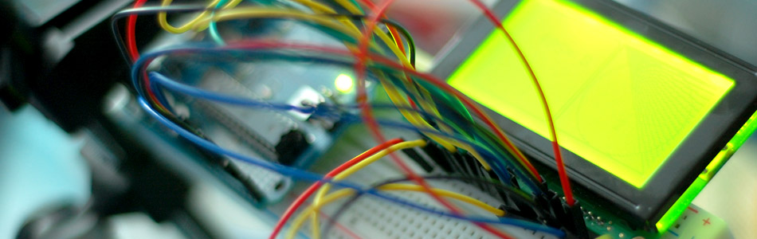

Quickly: KS0108B Graphic LCD 128+64 + Arduino

So, if you have this screen sold from SparkFun, and you wanted to hook it up to your Arduino, here is how you do that.
Hooking it up
LCD screens of this type are more difficult to work with than ones specifically designed for text. With these you have individual pixel control, so you can draw completely custom graphics with it. But it also means you have to keep track of a lot of pixels, hence all the extra wires. Making matters worse, many of these screens actually require a negative voltage on the dimmer pot to get an image from it. But luckily this particular one includes all the circuitry needed.
Note: this is hookup for the non-mega Arduino. The Arduino Megas actually connect differently to this screen. Just make sure to connect all the wires to the Arduino as seen on the right. You can click on the image to get a closer look.
To drive this graphic display you need a library, and for that, Arduino has you covered: http://www.arduino.cc/playground/Code/GLCDks0108
I know this is a lame excuse for an article. But like I said, it is just here incase you need to know how to hook it up.
{kind=link}
Article taken from bildr.org with minor changes - I am the original author of this content